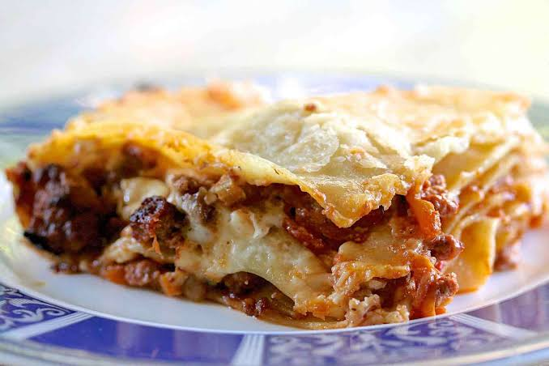

Bolognese Lasagna

Description
Lasagna Bolognese is a rich, oven-baked pasta dish originating from Bologna, Italy. It features alternating layers of thin egg or spinach pasta, savory ragù alla Bolognese, creamy besciamella (béchamel), and grated Parmigiano-Reggiano cheese. Unlike American styles, it relies on white sauce rather than ricotta.
Ingredients
The Bolognese Sauce
- 1 lb(450g) ground beef
- 1 onion, finely chopped
- 1 carrot,finely diced
- 1 celery stalk,finely diced
- 2 cloves garlic, minced
- 1 can (28 oz / 800g) crushed tomatoes
- 2 tbsp tomato paste
- 1/2 cup whole milk(soften milk)
- 1/2 cup dry white wine
- 2 tbsp olive oil
- Salt and black pepper to taste
The bechamel Sauce
- 4 tbsp butter
- 1/4 cup all-purpose flour
- 3 cups whole milk, warm
- 1/4 tsp ground nutmeg
- Salt and white pepper to taste
Assembly
- 12 lasagna sheets
- 2 cups mozzarella cheesee, shredded
- 1 cup Parmigiano-Reggiano
Steps
- bolognese Sauce:saute onion, carrot, celery, and garlic in olive oil,then add ground beef and brown it completely. Pour in wine, tomato paste, crushed tomatoes, and simmer for 45 minutes, stirring in the milk at the end.
- bechamel Sauce:Melt butter in a saucepan, whisk in flour for 2 minutes, then gradually add warm milk while whisking until thick. Season with salt, pepper, and nutmeg.
- Inicial Layering:Preheat oven to 190C, spread a thin layer of Bolognese in a 9x13-inch baking dish, and cover with lasagna sheets.
- Repeat Layers:Add layers of Bolognese, bechamel, mozzarella, and parmesan, repeating the process until ingredients are used, finishing with cheese on top.
- Bake:cover with foil, bake 25 minutes, then remove the foil and bake for 15 minutes more until golden, letting it rest for 15 minutes before serving.
Home